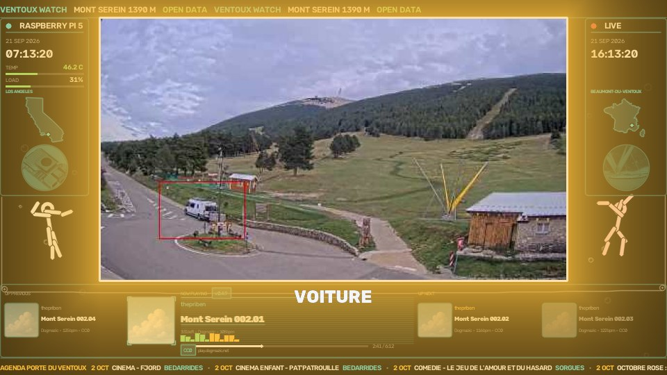

Web radio
#FREETECHNORADIO
Degraded mode Backup webcam, Cannes. Waiting for Mont Serein.
LIVE RASPBERRY PI 5
On the stream
One set piece at a time. A turn is taken only when the stage is free at the instant it starts; otherwise that whole turn is skipped. Periods are prime numbers. At night every period on that stage except the bear’s is divided by 3, and the start delay is divided by the same factor. Pixel, grey and wave are a separate draw, not on that stage. The bear keeps his own pace. Each row below is what is drawn, with its period, its duration and its gate, measured from the code that is running.
| Name | What happens | |
|---|---|---|
| Day | Left card, America/Los_Angeles. Right card, Europe/Paris, Beaumont-du-Ventoux. The calendars sit about nine hours apart, so past midnight in France the two dates differ. Three digits under each card: the integer part of that day’s ratio times 100. No motion reads 000. Under the digits, in small grey, catches over motions. A published class counts as soon as it is named, on both calendars, on each side’s current date: vehicle, car, truck, bus, person, cycle, plane, aircraft, animal. The higher ratio is green. A tie stays white. The green cheer waits for confidence 0.55. At one side’s midnight the line NEW DAY IN LOS ANGELES or NEW DAY IN BEAUMONT holds for 8 s, and only that reel returns to 000. | |
| Wire | A wire joins the two cards for the whole session. It is not on the stage clock. It leaves the lower corner of each card, drops through the black band, passes a pulley of radius 7 px at the 1600 px reference, and crosses 28 px under the camera window. Rest sag is 6 px. The cards drift against each other, and the wire sags and tightens with that drift. | |
| Bubbles | Always on, in the black bands, eight bubbles a side. A bubble is a pale ring. Its radius grows from 5 px to 10 px at the 1600 px reference as it climbs. The slowest rise takes 8.9 s, the fastest 4.9 s. Lateral drift is 11 px. Peak opacity is 0.55. They are drawn first, so the cards, the puppets and the camera window pass in front. | |
| Fish | Three fish cross those bands. Periods 71 s, 97 s and 127 s, prime to each other. Each fish is drawn only for the first 0.45 of its period, so the bands are often empty. One turn it climbs, the next it dives, and it changes band each turn. Length 58 px at the 1600 px reference, opacity 0.9. Pixels that would land on the camera window are wiped before the mix. If the window already touches the frame edge, the fish stay off. | |
| Pixel | Every 420 s one treatment is drawn from five slots, two of them empty, so the photograph often stays as it is. The slot is chosen from the block index alone, so a restart resumes the same treatment. Pixel holds 20 s and fades over 3.5 s at each end. The frame is reduced to 26 columns and enlarged nearest-neighbour. Pixel, grey and wave never run together. They stay off for 4 s after a named subject is on screen. | |
| Grey | Same draw as pixel, same 20 s, same 3.5 s fade. Colour is mixed toward perceived luminance: a blue sky and a green slope of the same arithmetic mean do not have the same lightness, and the mix follows that lightness. At full strength the slope is grey, then the colour returns. | |
| Wave | Same draw as pixel. Twenty-eight horizontal bands slide sideways by up to 3% of the width. The Pi shifts whole rows. A remap of every pixel is not used: it would rebuild two maps of two million floats on every frame while the Pi is encoding. | |
| Flyover | Gate: 300 s with nothing named, and no replay up. The relief takes the camera window and holds still, on the webcam’s own viewpoint. Day hold 120 s, the stored render left as it is. Night hold 90 s, the same frame multiplied by 0.4, with the picture-book lamp drawn lit: the model has no bulb. On that night model the clock keeps a steady amber dot for the whole hold. The day model does not. Pause before the next one: 1800 s. It stays up when something is seen. The window shows the model; the classification rectangle is not drawn on it. Bottom left, a line reads OPENSTREETMAP ODBL. Bottom right, about a quarter of the window, the live picture remains, with the word DIRECT and a red dot that blinks each second. Dancers, carpet, elephant and bear stay off this view. The Pi opens a picture it already has. | |
 | Catch | A good catch is a published class at confidence 0.55 or above while the thing is still in the picture: car, walker, bike, bus, truck, plane. The word on the rectangle still waits for 0.60. A published class below 0.55 still counts on the day reels. The stream sits a few seconds behind the watch, so the cheer waits until the subject is on screen and the rectangle is drawn. GOOD CATCH! crosses in green for 1.6 s. A white flash dies in 0.5 s. The letterbox takes the colour of that kind of passage for 3.5 s, and the name is written large under the picture. Pixel, grey and wave hold off for 4 s. During the flyover the rectangle stays with the live inset. |
| Console | While a track plays, a console spans the width under the picture: the cover just finished, the one playing, and the next two. With the playing track sit the artist, the title, the licence and the domain of the file. An equaliser follows the music. The release number stays for the session. The clock is the image counter, not the bytes waiting in the encoder, so the credit matches what is heard. | |
| Bear | Period 8191 s, which is 2 h 16 min 31 s. Not divided at night: the bear keeps his own pace. First turn delayed 90 s, long enough for YouTube to open the picture. Walk 2.6 s from the statue at (0.5698, 0.8593) of the camera window to the island at (0.2304, 0.8706), on a smoothstep. Dance 10 s on the island. The cutout is 72/1920 by 140/1080 of the window, times 43/47 on the island, then swelled to 1.35. During the dance he weeps and the line THIS IS MY HOME!!!!! is drawn in yellow. A small card sits bottom right, colour kept, Gaussian blur of sigma 1.1, label REPLAY · 2025. The sculpture itself does not move. | |
| Carpet | Period 397 s, crossing 14 s, no start delay. Gate: the music is pushing, and the stage is free at the start of the turn; otherwise the turn is skipped. At night the period is divided by 3. The carpet crosses the whole frame, black bands included, and follows the crest so it clears the summit. The figure is the same puppet as the corners. | |
| Submarine | Period 523 s, crossing 22 s, no start delay. No music gate: it crosses above the road whether the music is pushing or the slope is quiet. At night the period is divided by 3. It follows the crest and pitches by a tenth of its height, two and a half times during the crossing. If the drawing is missing on the Pi, the crossing does not happen. | |
| Piste | Period 787 s, descent 20 s. At night the period is divided by 3. The line is the André Philip run as OpenStreetMap records it, projected with the camera pose and the terrain. White is drawn behind him and fades ahead of him. Five turns, a weave of 2.6 times his size. Height 0.085 of the view. Same puppet as the corners, smaller because he is far up the slope. | |
| Elephant | Period 661 s, hold 4 s. Only from 01:00 to 06:00. Gate: the music is pushing, and 300 s have passed with nothing named, because he covers the road. At night the period is divided by 3. He fills about 0.95 of the frame. A trunk to the left, a small solid eye. | |
| Building | Period 1061 s, hold 14 s. At night the period is divided by 3. One building at a time, the five widest in turn. The footprint comes from OpenStreetMap and the roof height from the terrain model, both projected: the foot, then the walls, then the roof. The stroke draws itself, holds, and fades. The sheepfold runs past the right edge of the camera window, and the wire continues into the black band, at the place that wall would occupy if the camera saw wider. | |
| Sun | Drawn when the sun is up and still behind the ridge, or the weather is cloud, overcast, fog, mist, rain, snow or storm. A circle, eleven uneven rays, a smile, placed where the real sun falls in the frame. If that point is outside the view, it sits in the corner of the sky on the side where the sun is, once the sun is at least 3° up. It breathes, about one turn in 10 s. Drawn before pixel and wave, so those treatments take it with the mountain. | |
| Lamp | At night, once the sun is at or below the horizon. The pole follows the measured mast, 7 m, from foot to shoulder, and the bracket runs to the lantern the map places on the bulb. Its length in the picture comes from that height, the distance and the lens. The glow is the lamp’s own light, turned up around the bulb, and it breathes slowly. A camera whose pole was never measured gets no lamp. Drawn before pixel and wave. | |
| Replay | Gate: 300 s with nothing named. Hold 10 s. Pause 600 s before another. Only a passage marked accepted can return. On air the picture is greyed and blocked, at most 24 blocks; the file on disk stays sharp. It is enlarged at most 3 times, and kept within 0.32 of the width. The card is amber, with the word replay and the date. A sung line announces it. The moment something new is seen, the archive leaves. | |
| Version | For the whole session, while a track plays. A cyan pill sits beside NOW PLAYING and reads v followed by the number in the watcher. This build is v0.6.48. The type is Hershey simplex at 0.44 of the 1600 px reference, in a frame filled at 0.22 of cyan and stroked at 0.70. The same number is written into events.json at each publish, and the footer of this page reads it back. | |
| On air | On stream start, for 6 s, centred at 40% of the frame height. Two cyan Hershey duplex lines: #FREETECHNORADIO, then v plus the version. A voice says Free techno radio (deploi clip). After six seconds the lines leave; the console pill keeps the version for the session. | |
| Friend | Once a day, at 7:15 Europe/Paris. Grace 240 s: a restart inside those four minutes does not say it twice, and past the window the day stays quiet. The voice says: To my very good friend David Vincent or Vincent David or David Vincent, Je pense à toi. The line DAVID VINCENT OR VINCENT DAVID stays written for 17 s. | |
| Dijon | A collaboration. Twice a day, at 23:00 and at 23:15 Europe/Paris. Grace 240 s: a restart does not repeat a slot, and a missed slot is closed. Hold 14 s. Fade 0.5 s in and 0.7 s out. The camera window is graded toward mustard, BGR (36, 164, 214), at strength 0.55. The line reads UNE COLLAB. The hour is written above the logo. At 23:00 a voice says Il est vingt-trois heures à Dijon. At 23:15 it says Il est vingt-trois heures quinze à Dijon. |
The drawn sun (breathing rays, almost a GIF) was wired into the real layer by mistake, so OpenCV sometimes chases the wobbling rays of the little sun. Cute.
3D view
Not the stream flyover: this block is an interactive model in the browser. OpenStreetMap terrain, roads, buildings and trees, lit like the real sun over the pass. Mont Serein opens on the chalet roof, the same pose as the webcam; Cannes uses the municipal node on Boulevard du Midi, with a page field of view because that camera has not been fitted. Click the scene to orbit; Webcam angle puts the eye back; full screen keeps the buttons. Hover a mast or figure to read its name. On the Pi, when the road is empty, a still render of this model can replace the camera window with a live inset — that is the Flyover row in the table above.
Node 14255983894, bearing 190°, on a pole on Boulevard du Midi. The pole height is not on the map, so this view sits above the ground. The field of view is the page’s, not the webcam’s: it has not been fitted.
Camera
Fixed, facing 140°.